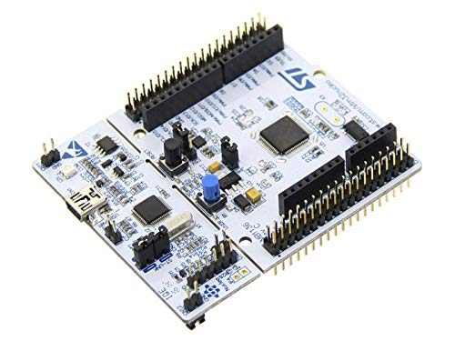
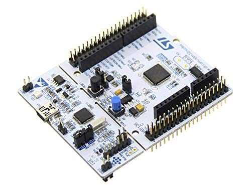
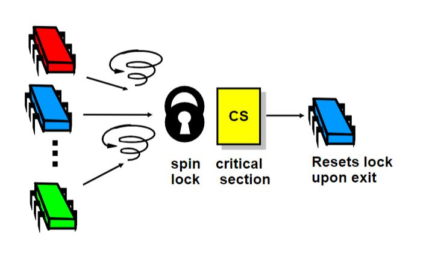
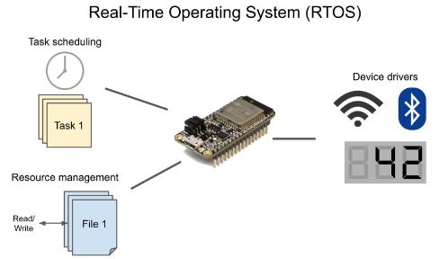
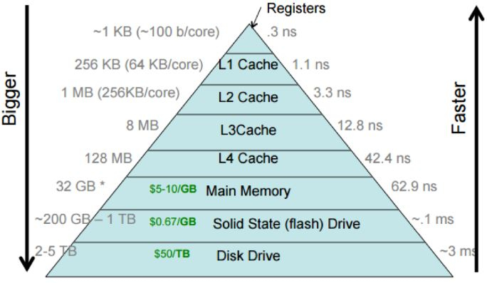

Projects
This is my current ongoing work where I am learning about Linux, from the booting process and device drivers to file systems. This work is still in progress, and I will add a GitHub link as I make more progress.
 

The best way to understand the working of any microcontroller and communication protocol is to thoroughly study the reference manual and datasheets, and devise peripheral APIs from scratch. This project aims to develop bare-metal STM32 (NUCLEO-F411RE) drivers for SPI, I2C, and USART using STM32 Cube IDE. The project includes the development of initialization (Init), de-initialization (De-Init), and data transmission/reception (Send-Receive) functionalities for both Master and Slave configurations. Additionally, the implementation involves creating interrupt handlers and other application-specific APIs for the three protocols. All the APIs were thoroughly tested by establishing communication between STM32 and ESP32.

Memory fetching cycles from memory remain the main problem in CPUs, creating an opportunity for concurrent processing of processes on idle ALUs. This project explores various lock-based, lock-free, and wait-free techniques to ensure the safety of shared memory spaces. The project includes the implementation and comparison of pthread-mutex, TAS and TTAS spin locks, back-off lock, and queue-based MCS & CLH locks. The project also includes the implementation of a lock-free and wait-free FIFO queue. In addition, the project presents a CILK-like work-stealing algorithm using a double-ended lock and lock-free queues, testing its performance for Qsort and Fibonacci numbers for up to 32 threads.

The objective of this project is to understand various functionalities and constructs in FreeRTOS, including memory management, scheduling, locks, semaphores, queues, priority inversion, and multicore programming. While there are no off-the-shelf lock-free objects in FreeRTOS, in certain cases, to avoid high contention, lock-free objects can provide better performance. Moreover, they can eliminate the issue of priority inversion, which severely affects binary semaphores and has some effect on mutexes even after priority inheritance. The project provides an implementation of a static (fixed-size) lock-free queue using ESP32's atomic xthal_compare_and_set instruction.

This is a group of small project and assignments I did for my computer architecture class. The project includes:
1. Cache Performance: Modern out-of-order processors with complicated cache replacement and prefetching techniques make it very difficult to ensure that data is being fetched from a specific memory level. This assignment aims at writing a program in C that employs pointer fetching for the next element in an array with different jump sizes to access specific cache levels.
2. Spectre Attack: Tested Spectre program with victim and attacker code on different machines and architectures. The assignment aimed at understanding side-channel attacks based on cache evict + fetch techniques.
3. RRIP Cache Replacement: Developed a re-reference interval prediction cache replacement policy to support the Rocket core in Chisel. The RRIP policy is particularly effective in mixed access patterns where LRU performs poorly due to thrashing.